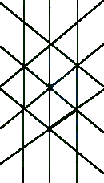

Links
HomeAbout
About Stáv
principles
martial aspects
healing aspects
philosophies
runes
stances
About Ice & Fire
Find Local Clubs
Join
Events
Worldwide Stáv Events
Contact Us
Blogs
Fall '06 Stáv Weekend Blog
Stáv Blog (Miki)
Products
CafePress Shop
Books/Memberships/Etc
Links
Ice and Fire UK
Stáv-International

What is Stáv
Stav Philosophies
There are many philosophies in Stav, originating from its pagan Norwegian beginnings.
This is a brief description of some of the more commonly used ones.
The Web
The Web is one of the simplest - and most complex - of all the teachings of Stav, being the symbolic underlying structure of all Creation. Through working on the stances and studying the symbolism of the Runes, students of Stav can learn to see the Web in all situations in life. Once the Web is seen and understood within a structure, Lines can be perceived that lead through the situation to it's resolution.
The Web
Galder and Seid
Galder is the outward application of Stav, such as the active use of the principles in martial arts, breath control and chanting.
Seid is the inward knowledge and understanding of the same principles.
Motte and Megin
Motte is an old Nordic word for physical strength and power.
Megin is the spiritual energy, the source of Motte and a more subtle force in its own right.
Orlog and Wyrd
Orlog is our inherent strengths and weaknesses. Everyone has skills and abilities that they are able to utilise and develop easily. These are our Orlog. Learning of our Orlog allows us to live to the best of our ability.
Wyrd is our route through life. This is determined by how well, or poorly, we are living to our Orlog.